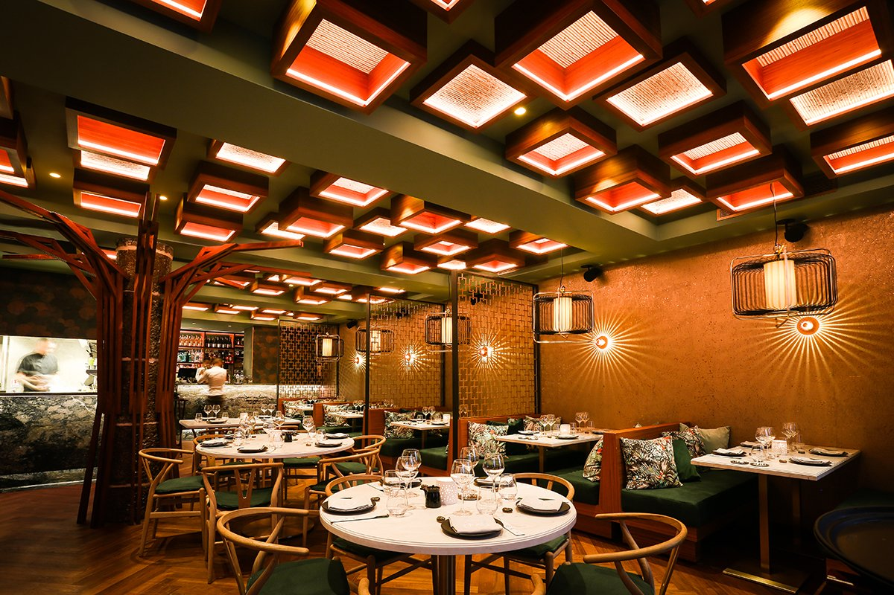
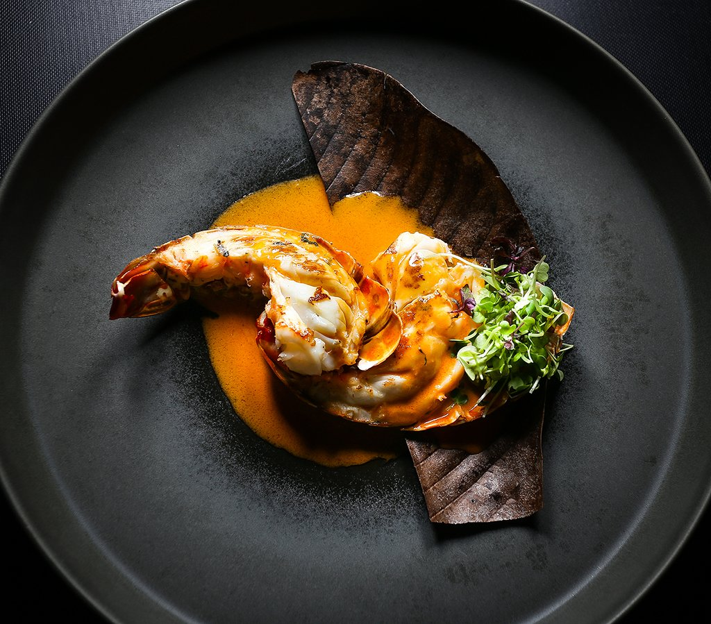

Samouraï sushi est la concrétisation du rêve d’un Chef passionné par l’Art du Sushi qui a pour seul but de partager son amour pour ces délicieuses bouchées japonaises et faire plaisir à ses convives. Afin de régaler vos yeux et vos papilles, nos sushis sont préparés devant vous avec des produits frais et de qualité. Situé dans le centre ville de Marseille au couer du 1er arrondissement, c’est avec grand plaisir que nous vous accueillerons dans notre boutique entièrement refaite à l’image des “izakaya”, pour de savoureux sushis à emporter ou à livrer directement chez vous. Mata Aïmachoo!.
L'inspiration de notre cuisine Contraction de « midori » en japonais, traduit par « couleur verte », notre restauration s'inspire de la plus pur tradition japonaise en donnant une note francaise à cette cuisine forte en histoire et en saveur.
